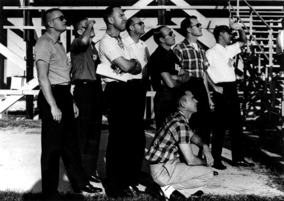

Fitting Apollo's final two jigsaw pieces, the mode and the lunar landing vehicle, into the picture had closed a phase for NASA. For four years, the space agency had been planning, defining, or defending some facet of what led up to and became Apollo. NASA now faced a period of developing and testing hardware and then a time of attaining the operational experience needed to land men on the moon. The past year, 1962, had been the most strenuous, not only because of Apollo's crowded activities but because Mercury and Gemini had demanded so much attention.
Project Mercury enjoyed a banner year in 1962, with three manned earth-orbital flights: John Glenn in Friendship 7 (Mercury-Atlas 6) on 20 February, Scott Carpenter in Aurora 7 (MA-7) on 24 May, and Walter Schirra in the six-orbit flight of Sigma 7 (MA-8) on 3 October. These, plus a good Saturn I flight on 16 November, gave the operations people experience in conducting actual missions.
It was becoming clear to Walter Williams and Christopher C. Kraft, Jr., Houston's mission and flight directors, that something larger and better equipped than the Mercury Control Center at Cape Canaveral would be needed for Projects Gemini and Apollo, with their longer and more complex missions. Flight controllers were spending a disproportionate amount of time traveling from Houston to the Cape - time that could more profitably be used for discussing ways of getting better performance from the spacecraft systems, training a larger cadre of flight controllers, and studying methods for handling Apollo missions.80
The Houston group began pushing hard for an "Integrated Mission Control Center" at the new Clear Lake site southeast of the city. "Integrated" meant not only transferring flight control from the Cape but also moving computer programming and operations to the Texas center. Computer functions, including tracking and communications, had been Goddard's responsibility during Mercury. Harry Goett's team at the Maryland center had worked out plans for expanding the Manned Space Flight Network developed for Mercury to several times the size it was then. To this team, it seemed logical to keep this function in its own capable hands. Administrator Webb, however, agreed with Williams and Kraft, at least in part, and announced on 20 July 1962* that the main Apollo control center would be in Houston. But the location of the primary computer complex and the division of labor for the manned space flight tracking and communications network was still unsettled at the end of 1962.81
Project Gemini operations in 1962 essentially paralleled those of Phase A - earth-orbital - for the Apollo spacecraft. The Gemini team was busy with detailed systems and subsystems definition and subcontracting. McDonnell's engineering mockup of the Gemini spacecraft was ready for review by Houston officials on 15 and 16 August. As the inspection began, Russian cosmonauts Andrian G. Nikoleyev in Vostok III and Pavel R. Popovich in Vostok IV landed safely after flights that, at first glance, seemed to have accomplished two Gemini objectives designed to gain experience for Apollo - long duration and rendezvous.
Although the cosmonauts did log a combined time of nearly 166 hours, contrasting with less than 20 hours total time for the three Mercury pilots during the year, it soon became obvious that the Soviets could not maneuver their craft to rendezvous in space. Because the two Russians came within five kilometers of each other, however, Gemini engineers wanted to see if the Mercury spacecraft could be modified to rendezvous with a passive target. After intensive study, Kenneth Kleinknecht, the Mercury project manager, reported that the modifications would add too much weight - the spacecraft might not even reach orbital altitude.82

Newly chosen astronauts (left to right) Neil Armstrong, Frank Borman, James Lovell, Thomas Stafford, Charles Conrad, John Young (kneeling), Edward White, and James McDivitt watch the launch of Walter Schirra aboard Mercury-Atlas 8, in the next-to-last mission of the Mercury program.
The Gemini announcement in late 1961 had declared that "NASA's current seven astronauts will serve as pilots in this program. Additional crew members may be phased in during later stages." In April 1962, the agency began selecting a new group of pilots. Six months later, eight of the nine "astronaut trainees"** watched from the Florida shoreline as Schirra began his six-orbit flight. Across the ocean, people in 17 countries viewed the first European television broadcast, via the communications satellite Telstar, of a space launch in "real time."83
Amid these and many other activities - such as building offices and training, checkout, and test facilities and erecting launch pads - the feasibility and definition phases of Apollo ended for NASA Headquarters and the three manned space flight field centers. The next step, design and development, promised to be equally strenuous and demanding.
* At a celebration given on 4 July 1962 by the Houston Chamber of Commerce to welcome Manned Spacecraft Center employees and their families to Texas, Gilruth had intimated that the new control center would be built at the Clear Lake site.
** The nine new members of the astronaut corps were Neil A. Armstrong, Frank Borman, Charles Conrad, Jr., James A. Lovell, Jr., James A. McDivitt, Elliot M. See, Jr., Thomas P. Stafford, Edward H. White II, and John W. Young. All except Armstrong and See were members of one of the armed services. See did not attend the launch because he was clearing up some personal business before reporting to the Houston center. The designation "trainee" soon disappeared, except in some official documentation.
80. NASA, Results of the First United States Manned Orbital Space Flight, February 20, 1962 (Washington, 1962); Results of the Second . . . Flight, May 24, 1962, NASA SP-6 (Washington, 1962); Results of the Third . . . Flight, October 3, 1962, NASA SP-12 (Washington, 1962); John D. Hodge, interview, Houston, 17 Dec. 1969.
81. Edmond C. Buckley to Harry J. Goett, 25 June 1962, with enc., "Management Plan for the Manned Space Flight Network (GSFC)," 19 June 1962; Goett to NASA Hq., Attn.: Buckley, "Comments on June 19, 1962 draft of 'Management Plan for the Manned Space Flight Network,'" 5 July 1962; Corliss, Histories of STADAN, MSFN, and NASCOM; Seamans to Admin., NASA, "Location of Mission Control Center," 10 July 1962; [MSC], "Remarks by Dr. Robert R. Gilruth at Houston-Manned Spacecraft Center Welcome, July 4, 1962"; "Gilruth Cites MSC Progress Despite Difficult Relocation," MSC Space News Roundup, 11 July 1962; NASA, "NASA Mission Control Center to Be at Houston, Texas," news release 62-172, 20 July 1962; Howard W. Tindall, Jr., to Assoc. Dir., MSC, "Assignment of responsibility for the technical direction over the mission computer program development for the IMCC (RTCC)," 10 Dec. 1962.
82. McDonnell, "Project Gemini Engineering Mockup Review, 15–16 August 1962," Rept. 9031, n.d.; L. Lebedev, B. Lyk'yanov, and A. Romanov, Sons of the Blue Planet, ed. Dr. K. S. Kothekar, trans. Mrs. Prema Pande, NASA TT F-728 (Moscow, 1971: New Delhi, India, 1973), pp. 75-79; Zavasky, minutes of MSC Senior Staff Meeting, 24 Aug. 1962, p. 5; Swenson, Grimwood, and Alexander, This New Ocean, p. 462.
83. Paul P. Haney, "NASA Plans Two-Man Rendezvous Spacecraft," draft NASA news release, [8 Dec. 1961]; House Committee on Science and Astronautics, Special Subcommittee on the Selection of Astronauts, Qualifications for Astronauts: Report, 87th Cong., 2nd sess., 1962, p. 7; NASA, "Nine New Pilots Selected for Space Flight Training," news release 62-200-A, 17 Sept. 1962; "Some Day That Will Be Me," photo and caption from MSC Space News Roundup, 17 Oct. 1962; "Millions in Europe Watch Launching via Telstar Relay," Washington Post, 4 Oct. 1962.